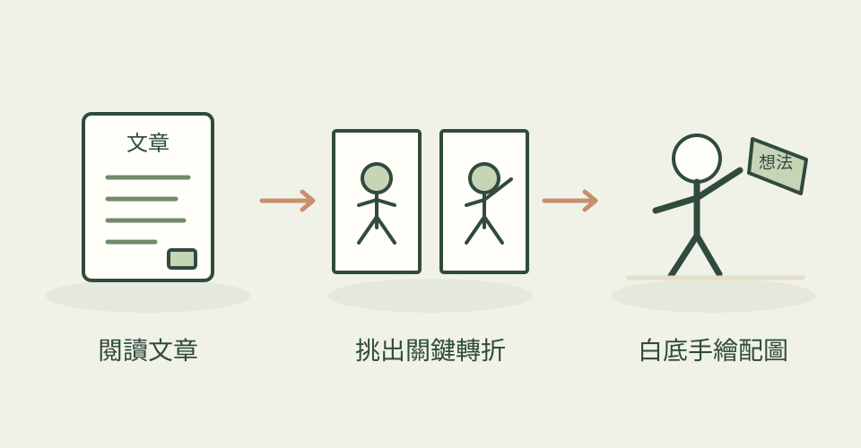

這套插畫把抽象觀點變成具體動作。小黑不是擺在角落的裝飾，而是畫面中正在搬運、分類、連接或改造東西的角色。
它怎麼幫忙
AI 先讀文章，找值得配圖的認知轉折，整理分鏡清單。每張圖只表達一件事，再各自生成、核對白底、留白、動作與中文註記。
功能快速理解

挑出文章裡的一個關鍵意思，用小角色與手繪情境說清楚。
功能示意・本站繪製 放大查看可以這樣開口
這是一個可依需求修改的委託範例。
替一篇談「建立信任」的文章規劃四張配圖。小黑用一塊塊證據鋪出橋，每張只放一個短註記。先給配圖清單。
適合什麼工作
適合中文作者、知識型內容與希望維持個人視覺辨識度的人。
開始之前
- 準備工具
- 有圖片生成能力的 agent；只規劃配圖時可先不生圖。
- 使用成本
- 實際圖片生成依模型或方案計費。
- 交付內容
- 16:9 PNG、配圖位置與 shot list
- 先留意
- 不是可編輯 SVG；中文錯字和多餘標題需要生成後核對。
作者與來源
本文依作者公開說明整理，沒有實際執行這個專案。功能插圖由本站繪製，原作者範例另行標示；並非本站執行技能的測試結果。GitHub 星數為專案總量，觀察時間為 2026年10月29日 08:29（台北時間）。
與前次快照相比增加 28 星；這不是 GitHub Trending 排名。